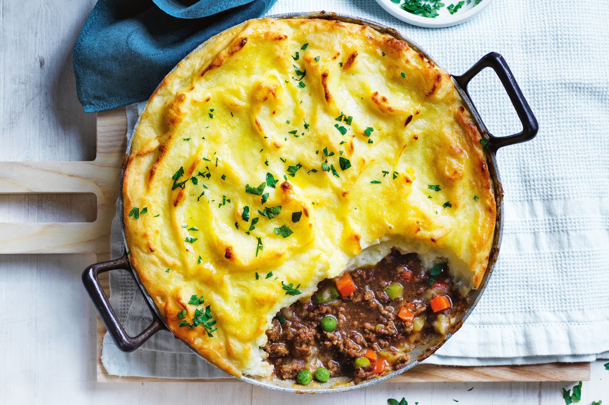

Fluffy Cottage pie!

Cottage pie is a delicious casserole recipe with a ground beef and vegetable filling that’s topped with a mountain of fluffy mashed potatoes.
This is what you will need ↓
- 1kg potatoes
- 50g parmesan cheese
- 120ml milk
- 50g butter
- salt & ground pepper
- olive oil
- large onion
- garlic cloves
- 2 large carrots, diced
- 2 celery, diced
- 700g ground beef
- 250ml beef broth
- 2 tablespoons tomato paste
- 1 tablespoon worcestershire sauce
- 2 teaspoons chopped rosemary
- 1 teaspoon fresh thyme
- 150g frozen peas
Follow the recipe ↓
- Cook the potatoes.
- Mash the potatoes.
- Saute the onion and garlic.
- Add more veggies and meat.
- Add the flavor.
- Add the peas.
- Top with mashed potatoes.
- Bake.
You are done! Bon appetit!
Go back to recipes